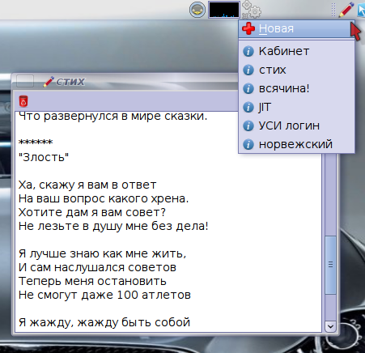

QtNote
It's just very small Qt app which usually lives in your system tray and allows you to make notes quick way.
QtNote was written as a clone of Tomboy with use of Qt. It's not so feature rich as Tomboy but light and fast and usually suits all common needs. Moreover QtNote can work with Tomboy notes and it's not so hard add support of other apps.
Some features:
- Quick access to notes from tray menu
- Internal notes manager to handle multiple notes at once
- Support for Tomboy notes
- Create notes from selection by hotkey (X11 only)
- Crossplatform (tested on linux and windows with gcc and Visual C)
- Other: configurable amount of notes in menu. configurable storage path, print note, save note dialog geometry
